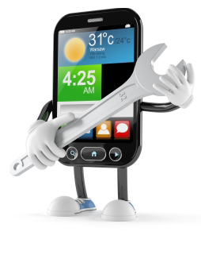
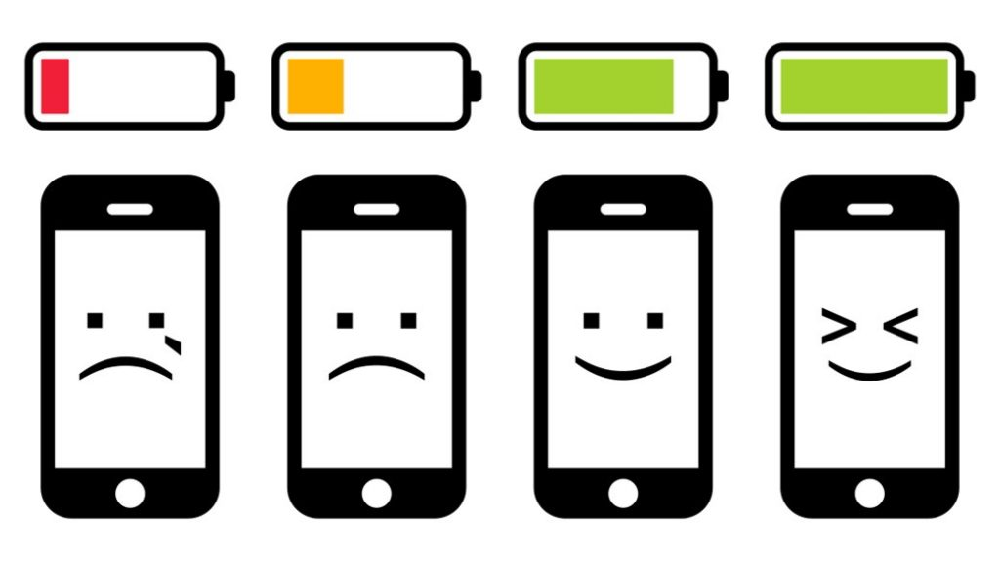
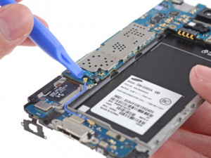

Manutenção de Celular
| 
| O celulares são hoje um elemento essencial na vida e no dia a dia de qualquer pessoa. Seja para se comunicar com seus amigos, familiares, clientes e fornecedores, seja para se entreter com jogos, músicas, vídeos e notícias, para se localizar através dos aplicativos de GPS e Navegação, enfim, a lista de utilidades de um Smartphone é gigantesca.
Com isso, é grande o impacto quando o aparelho apresenta algum problema não é mesmo? É um verdadeiro desastre, muitas pessoas ficam completamente perdidas e não sabem o que fazer.
Algumas coisas podem ser feitas pelo próprio usuário, mas para outras, principalmente no caso de problemas físicos com o aparelho, a solução é procurar a ajuda de um assistência especializada em manutenção de celular.
Vamos falar aqui um pouco sobre os problemas mais comuns desses aparelhos: problemas com a tela, lentidão e bateria. Veja o que você pode fazer em cada caso, quais as opções e quando vale a pena utilizar um serviço de conserto de celular ou realizar a trocar do aparelho. |
Principais Causas de Manutenção de Celular
Um celular é um aparelho que possui muitos elementos integrados, seja a parte lógica com seus sistemas operacionais e seus diversos aplicativos, seja a parte física, com suas várias peças e componentes.
Isso faz com que sejam muitas as possibilidades de problemas específicos em cada marca e modelo que existe no mercado.
No entanto, segundo as asssistências técnicas, são 3 os principais problemas relacionados a manuntenção de celular, vamos a elas:
Problemas com a Tela
Podemos dizer tranquilamente que a tela é o componente mais sensível do celular. Os aparelhos são desenvolvidos para suportar pequenas quedas, mas em alguns casos as quebras e riscos são inevitáveis.
O usuário pode e deve tomar todas as medidas possíveis de proteção, principalmente com o uso de capas e películas protetoras e com cuidados ao armazenar e manusear o aparelho.
No entanto, as quedas e impactos são muitas vezes inevitáveis, e em alguns casos nem a capa protege bem o suficiente.
Nesse caso a única opção é procurar uma assistência que possa realizar esse conserto de celular, quase sempre com a troca da tela quebrada.
O problema é que o custo de uma troca de tela é normalmente muito alto e pode chegar a mais da metade do preço de um aparelho novo, principalmente nos smartphones mais modernos, e por isso nem sempre compensa realizar essa manutenção.
Problemas com Lentidão e Performance
Após algum tempo de uso, é comum o celular começar a apresentar alguma lentidão. Isso acontece principalmente devido ao uso, e constante instalação, atualização e remoção de aplicativos.
É importante lembrar que todo aparelho tem um limite, a quantidade de aplicativos que o usuário pode instalar e usar simultaneamente é limitada e varia de acordo com o modelo. Além disso, com o passar do tempo os aplicativos vão ficando mais pesados e com mais recursos conforme são atualizados, e com isso um aparelho de 3 anos atrás por exemplo começa a ter dificuldades para executar os apps atuais.
Outro fator que prejudica a performance é que frequentemente, ao se instalar e remover muitos aplicativos, esses apps deixam “sujeira” no sistema, arquivos temporários que não são mais usados por exemplo.
Nesse o caso, o próprio dono do celular pode realizar alguns procedimentos de limpeza de cache e utilizar aplicativos de limpeza de celular como o CCleaner. Em casos extremos até um reset (voltar ao que veio de fábrica) vai ajudar. Veja mais dicas para o celular lento nessa página.
Esse tipo de procedimento vai ajudar a aumentar um pouco a vida útil do aparelho, mas em algum momento a troca será inevitável.
Problemas com a Bateria

Outro fator que causa muita insatisfação dos usuários é a baixa duração da bateria entre as recargas.
Muitas vezes isso é devido à maneira como o usuário utiliza o aparelho. Algumas propriedades e configurações fazem o celular consumir mais bateria, por exemplo o brilho da tela, a opção de vibrar, o uso do WiFi, GPS e Bluetooth, entre outros. Veja aqui algumas dicas sobre como economizar bateria.
Além disso, o fato é que toda bateria tem uma vida útil. É dificil dizer quantos anos ou meses uma bateria dura pois isso depende muito do aparelho, do modelo de bateria e de como o dono usa o celular. Mas sabe-se que após um ano já há uma queda para pelo menos 80% da capacidade inicial.
A boa notícia é que trocar uma bateria não é um bicho de sete cabeças e não é de fato necessário procurar uma empresa de conserto e manutenção de celular para isso, a não ser pela comodidade.
Qualquer pessoa pode comprar uma nova bateria em uma loja especializada ou até pela Internet em sites como o Mercado Livre e DealExtreme por exemplo, tomando apenas o cuidado de verificar o modelo de bateria usado em seu aparelho, o vendedor normalmente informa quais são os aparelhos compatíveis com cada modelo de bateria.
Nesse caso o usuário também deve refletir se vale a pena apenas trocar a bateria, provavelmente ao chegar nesse ponto o aparelho também já está mais lento, já não suporta mais os aplicativos como antes e talvez seja mais vantajoso procurar por um aparelho mais moderno.
Outros defeitos

Os 3 acima são as principais causas de manuntenção nos aparelhos de celular, no entanto existem muitas outras possibilidades, entre elas:
Queda do aparelho na água;
Problemas com o conector de energia;
Problemas com o cartão de memória;
Falhas nos microfones e autofalantes;
Falhas na câmera;
Problemas com a placa interna;
entre outros
Em todos esses casos, há muito pouco que o dono possa fazer sem ter um conhecimento avançado. Procure
uma empresa especilializada nesse tipo de manutenção de celular e veja se vale a pena realizar o conserto ou comprar um aparelho novo.
Afinal, Vale a Pena Consertar o Celular?
é uma pergunta muito dificil de responder pois cada caso é um caso. Muitos fatores devem ser analisados para se chegar a uma conclusão, as perguntas abaixo deve te ajudar a chegar a uma conclusão:
O celular atual já é antigo ou acabou de sair do período de garantia?
Antes do problema, você estava satisfeito com seu aparelho ou já pensava em um novo?
Quanto você pagou pelo aparelho atual, quanto estaria disposto a gastar em um novo aparelho?
Qual sua condição financeira atual?
O conserto vai deixar o aparelho como novo ou ainda há riscos do problema voltar ou não ser resolvido 100%?
Quanto vai ficar o conserto? É quase o preço do novo aparelho que deseja?
Como você pode ver, são muitos os pontos a ser considerados, mas basicamente deve ser feita uma relação entre o tempo que você já está com o aparelho, suas condições para uma nova compra e qual a diferença de preço entre consertar o celular e comprar um novo.
Por exemplo, se você comprou um celular 3 anos atrás por R$ 1.200,00 reais, sua tela quebrou e será preciso trocar, a manutenção vai ficar em R$ 800,00, e um possível novo aparelho custa R$ 1.500.00. Nesse caso, após 3 anos de uso, o aparelho provavelmente já não tem o mesmo desempenho, a bateria também já está próxima do fim da sua vida útil, a diferença de preço entre o conserto e um aparelho novo não é tal alta, normalmente a escolha seria um aparelho novo, mas e se você está desempregado, sem diheiro nenhum banco?
Enfim, é uma escolha muito pessoal e não existe uma resposta única, mas pense sempre na depreciação do aparelho, do custo do conserto e de suas condições financeiras.